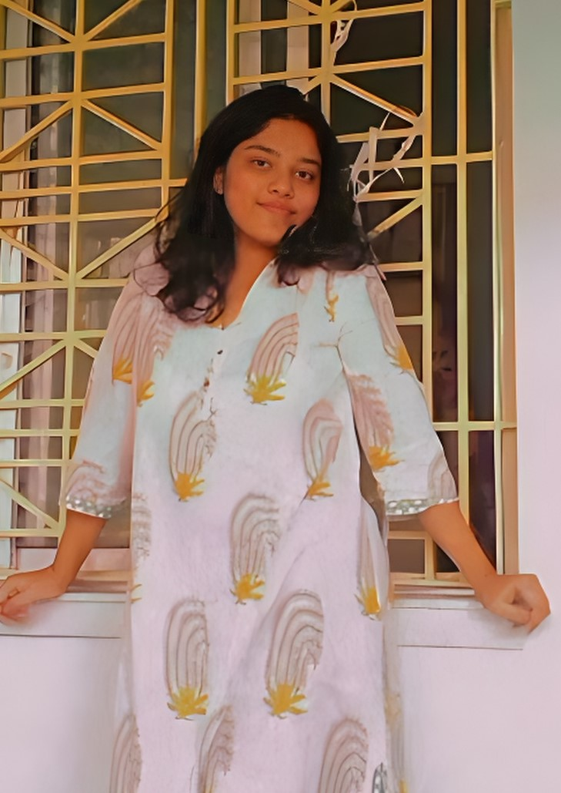
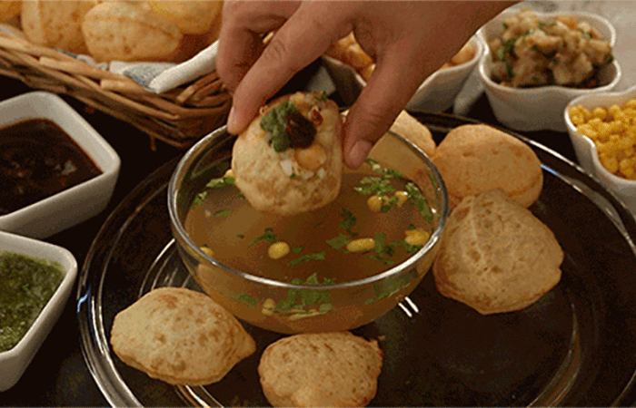

MY PORTFOLIO

My name is Paushali Debnath.
I am a web developer. Exploring new coding languages and developments as well as acquiring knowledge and experiences.
Well welcome to my portfolio, where I embark on an exciting journey of showcasing my web development skills. As a first-time portfolio creator, I have kept things simple. Within these pages, I proudly present a collection of my work, showcasing my growing experience in web development.
While my content may not yet match the level of seasoned professionals, I assure you that every project I share reflects my passion and dedication to delivering high-quality work. My aim is to captivate visitors and leave a lasting impression. I believe that even in simplicity, there lies beauty and effectiveness.
I invite you to explore my creations, witness my progress, and envision the potential of what I can achieve.
As i am a big foodie person. I would like to share my most favourite Recipes.
▶ 1st Recipe-Cinnamon Rolls

▶ 2nd Recipe-Panipuri

▶ I love games with all my heart. Discovering new worlds and going on exciting adventures is what truly captivates me.
The thrill of overcoming challenges and getting better keeps me hooked. Games provide an escape, a way to relax and dive into different realities.
The creativity and innovation in game development always amaze me. The excitement of competing and the fun of playing with others brings me so much joy. Games' imaginative stories and narratives inspire and comfort me.
Playing games lets me unleash my imagination and explore endless possibilities. The incredible advancements and immersive experiences in games constantly surprise me. Games are not just a hobby;
they are my true passion, bringing excitement and fulfillment to my life.
so here is some suggestions on the Best Online Games which i would like to share.
Suggestions of some online games.
If you want to have a word with me just click the below button
Contact me